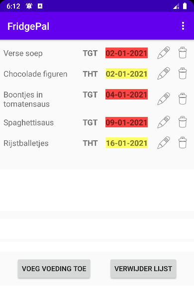
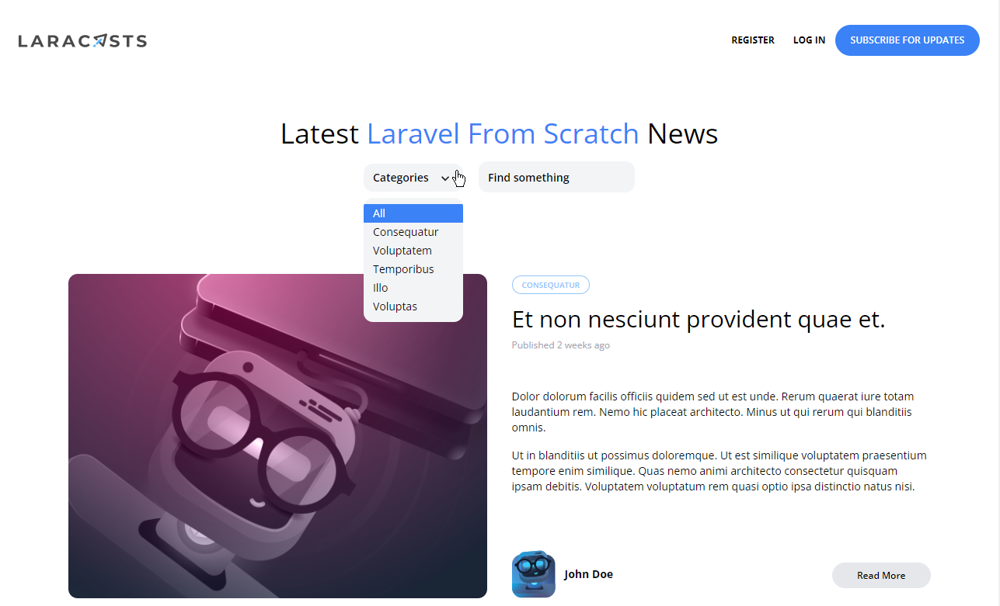

Jasper De Cooman
About me
Junior Developer who has seen just enough to know there is yet much to learn!
💙 Backend side of applications, minimalistic user interfaces
🏠 Living in Tielt with my girlfriend, preparing myself for a new job
🎲 Hobbies: Boardgaming - Reading - Miniature Painting
Soft Skills
- Work in team or individually, either is possible for me
- First experience with mob and pair programming
- Not afraid to ask questions or request help from colleagues
- Clean code improves maintainability and extensibility, so it matters to me
- Ready to learn: your tech stack can become mine!
Personal Projects
FridgePal
 Click to view more screenshotsAn app that helps keeping track of the expiry date of your fridge's contents.
Features include a configurable daily notification, color-coded exiry dates and a recipe search through Edamame API.
Developed in two months during my education at VIVES college
View on GithubLaravel From Scratch: new features
 Click to view more screenshotsAdding features to a tutorial blog as suggested by the author Jeffrey Way.
It's a great way to put what I learned about the framework in practice. It also made me dip my toes into Alpine.js and Tailwind CSS.
You can read more about these new features and their progress in the project's readme.
View on GithubPublished Solutions on Exercism
Solving exercises on Exercism helped me develop more fluency in PHP and Javascript.
By publishing solutions, other users can learn from me as I have from them.
You can view my published solutions by visiting my profile.